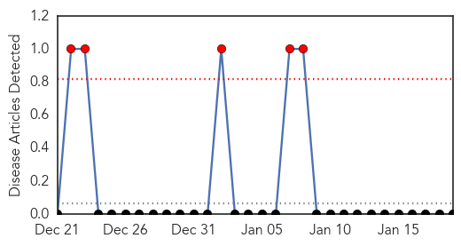
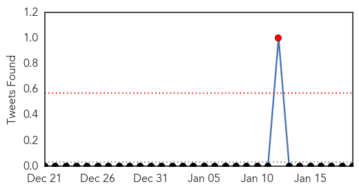
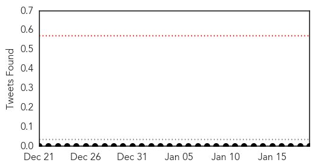
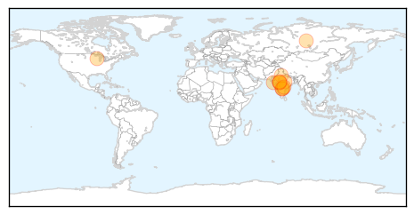
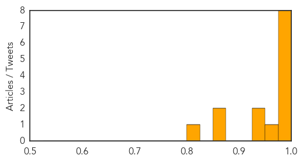

West Nile Virus
30-Day Web Trend
5 alerts, 0 warnings

30-Day Twitter Trend
1 alerts, 0 warnings

Article Locations

Article Confidences

Top Articles:
-
No articles found for Jan 19, 2015
Top Tweets:
-
No tweets found for Jan 19, 2015
Swine Flu
30-Day Web Trend
3 alerts, 3 warnings

30-Day Twitter Trend
0 alerts, 0 warnings

Article Locations
Article Confidences
Top Articles:
- 0.999
- Swine Flu Scare Spreads Among City Doctors Now, One Medico Infected
- 0.999
- 3 junior doctors test positive for swine flu
- 0.997
- In Indore, fourth H1N1 death in 19 days
- 0.990
- The Rocky Mount Telegram
- 0.985
- 3 more swine flu deaths in state
- 0.982
- One more die of swine flu in Madhya Pradesh
- 0.982
- 4 deaths due to swine flu in Haryana, 10 more cases reported in state
- 0.979
- One more patient dies due to swine flu in Madhya Pradesh
- 0.965
- 25 fresh cases of swine flu confirmed in Hyderabad
- 0.946
- Swine Flu Awareness Campaign
- 0.944
- How domesticated dogs made Serengeti lions sick
- 0.870
- Healthy citizens rush to get flu vaccines in Hyderabad
- 0.856
- Two new HINI cases reported in Gurgaon
- 0.822
- Telangana Deputy CM asks people not to panic over swine flu
Top Tweets:
-
No tweets found for Jan 19, 2015